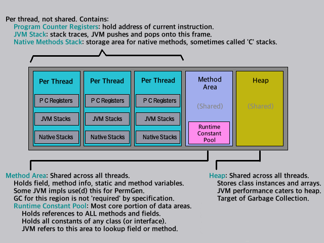
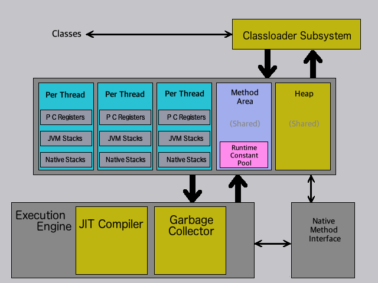
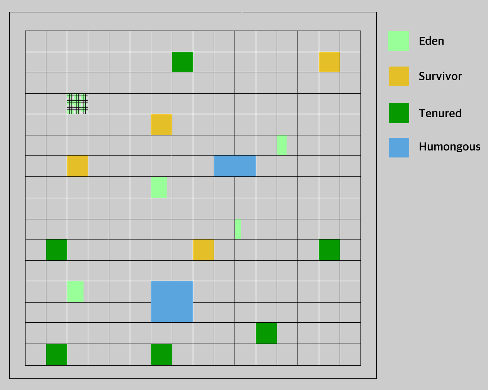
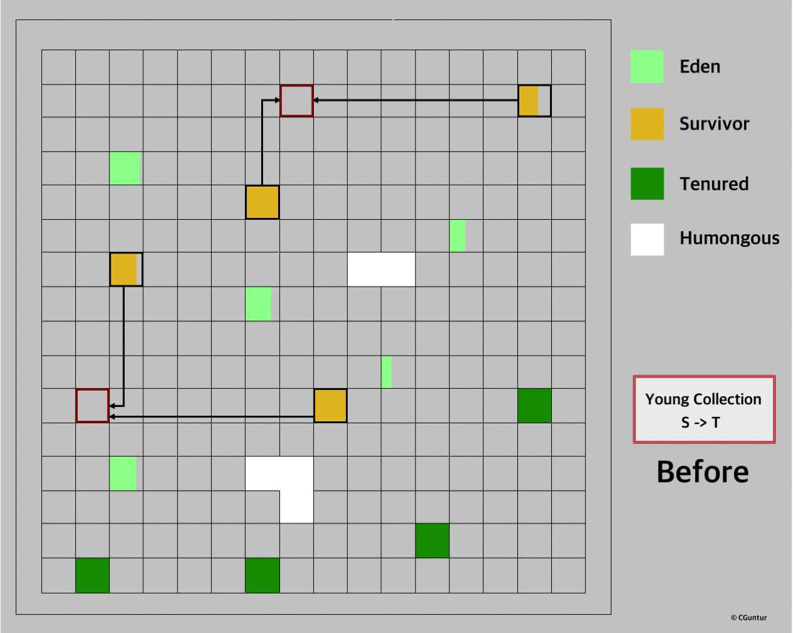

Garbage Collection in Java

Below icons are from SuperTinyIcons: https://github.com/edent/SuperTinyIcons
about: presenter


LinkedIn and my blog QR codes generated at QRStuff: http://www.qrstuff.com.
Agenda
Topics covered:- 10 minute walk-through:
- Java Memory - Model
- Java Memory - Usage
- Java Memory - Allocation
- Garbage Collection - Basics
- Garbage Collection - Patterns
- Garbage Collection - Generational
- G1GC - How it works
- G1GC - Logging Options
- G1GC - Common Tuning Situations
- A discussion (Time permitting):
- Garbage Collection - Future
Java Memory Model
JVM utilizes memory by creating runtime data areas: Java Memory Model - Runtime Data Areas - Part 1
Java Memory Model - Runtime Data Areas - Part 2
Java Memory - Usage
Classloaders create instances. GC performs memory management. Java Memory - Management
A typical JVM (for now) manages different kinds of memory:
- Heap:
- Runtime data area where memory for class instances and arrays are managed.
- Part of the memory managed by Garbage Collection.
- Typically divided into spaces: young (eden), survivors (to, from) and old (tenured).
- Non-heap (or non-managed heap):
- Method area shared among all threads.
- Memory required for runtime pools and code for methods and constructors.
- PermGen or Metaspace - Immutable state objects typically not garbage collected.
- CodeCache - Optimizations and profiling of code for better performance.
- Memory Manager:
- Manages one or more memory pools. Garbage Collection is a memory manager.
Java Memory - Allocation
JVM allocates memory based on the following strategy:
Java uses Garbage collection to free heap memory.
Content
Location
Unmanaged heap
PermGen
or
Metaspace
(space allocated on invocation and de-allocated on method return).JVM stack
Heap
Garbage Collection - Basics
Garbage collection is the process of:
- looking up a heap of memory
- identifying all objects that are in use
- reclaiming memory by deleting un-used (no-reference) objects
An unused object is the one that is no longer referenced by any part of the program.
Trivia:The first garbage collection process: Lisp, in 1959 by John MacCarthy (author of Lisp and major contributor to ALGOL) fame.
Garbage Collectors - Classification
Garbage collectors can be classified with several classifiers.| Based on how collection runs | Based on how objects are marked |
|
|
| Based on run interval of collections | Based on what collection does to objects |
|
|
Garbage Collection - Patterns
This section will list a few garbage collection patterns.Garbage Collection - Reference Counting
Garbage Collection - Mark/Sweep/Compact

Garbage Collection - Copying
Garbage Collection - Generational
Java, since JDK 5 has had a generational garbage collector as its default. The generational collector divides the memory into smaller memory areas. Management of objects in different memory areas is done differently.Generational GC - Pictorial
Weak Generational Hypothesis :- Most objects do not have a long life.
- It is usually rare for an older generation object to reference a young generation object.

Picture influenced by Jörg Prante's writeup: http://jprante.github.io/2012/11/28/Elasticsearch-Java-Virtual-Machine-settings-explained.html
Generational GC - Explanation
Explanation:- heap is broken into smaller areas (sub-heaps).
- newly created objects are allocated in a "young" generation heap.
- Eden itself divided into TLAB sections for individual threads and a common area.
- separate GC processes run for each generation, young typically is an all-at-once, stop-the-world, copying collector.
- objects that stay "alive" longer get moved to older generation.
- Permanent Generation is for storing class/method definitions and static content.

Generational GC - Types - Older
There are a few different types of collectors:- Serial Collector
- Freezes all application threads to collect garbage.
- Designed for single-thread and tiny heap sized (~100 MB) apps.
- Disqualified for most modern Java apps.
- VM Option to enable:
-XX:+UseSerialGC.
- Parallel Collector a.k.a Throughput collector - Java 1.5 onwards, default collector Java 1.5, 1.6, 1.7 and "1.8"
- Young gen., by default, uses the parallel (scavenge) collection, while tenured gen. uses a serial collector.
- VM Option to enable:
-XX:+UseParallelGC. - VM Option to enable for tenured:
-XX:+UseParallelOldGC.
- Concurrent Mark-Sweep (CMS) Collector (mostly*) - available Java 1.5 onwards until Java 1.8
- By default, Young and tenured gen. use a CMS collector.
- Does not compact by default, to make GC a low-pause, low-latency, but causes heap fragmentation.
- * An eventual fill up of old memory causes a fall-back to a STW M/S/C that results in performance degradation.
- Focuses on live objects and defers garbage handling, until crisis time.
- VM Option to enable:
-XX:+UseConcMarkSweepGC. - VM Option to enable Parallel collection on young generation:
-XX:+UseParNewGC.
Generational GC - Types - Why New
Some notes on the existing garbage collectors:- Not performant for large memory heaps (large heaps are common these days).
- Unpredictable and inconsistent pause-times and lesser number of STW GCs.
- Memory availability is dependent on GC or compaction irrespective of the heap size.
- Not much effort put into re-use of duplicated content.
- The contiguous memory area arrangement reduces flexibility of "moving the walls".
- Mostly focused on live objects, not on garbage (an exact antithesis of the name).
- JVM limited in allocating the PermGen space within the its allocated memory.
- Required different collectors on young and tenured generations to achieve performance benefits.
G1GC is the new default collector since JDK 9.
Garbage First Garbage Collector
Java 9 introduced a new default Generational Garbage Collector. This new collector is called Garbage First Garbage Collector (G1GC).
Recommended slide deck: https://www.slideshare.net/MonicaBeckwith/java-9-the-g1-gc-awakens.
G1GC - Pictorial
Some observations :- Non-contiguous memory regions of equal size.
- Memory is divided into around as close to 2048 regions, as possible.
- The region sizes can range from 1 MB to 32 MB depending on the heap size.
- G1 GC has a pause time-target that it tries to meet (soft, real time), hence region sizes are controlled.
G1GC - Explanation
Explanation:- performs a conc. global marking phase to find live objects throughout.
- post-marking, G1 knows which regions are mostly empty.
- collects these regions first, which yields a large amount of free space.
- goes after regions that have the most garbage, it is called Garbage-First.
- incremental parallel copying of live objects from one or more sets of regions, called Collection Set (CSet).
- references to objects in the region are tracked via Remembered Sets (RSet).
G1GC - Cycle
Expanded G1GC Cycle :
Picture influenced by the Oracle GC Tuning Guide: https://docs.oracle.com/javase/9/gctuning/garbage-first-garbage-collector.htm
G1GC - What triggers Initial Mark
What triggers the Initial Mark :- Initiating Heap Occupancy Percent (IHOP) ↠
-XX:InitiatingHeapOccupancyPercent:
- Default value is 45, thus an Initial Mark is triggered when old gen heap size is 45% filled.
- This is just an initiating value. G1 determines via measurement what the optimal percentage should be.
- Such an adaptive HOP can be turned off by un-setting the flag (notice the -):
-XX:-G1UseAdaptiveIHOP. - Turning off the Adaptive IHOP will make the G1 collector rely on the IHOP value alone.
- This value is usually considered a soft threshold, reaching this limit may not immediately trigger Initial Mark.
- Guaranteed Survivor Space Availability Percent ↠
-XX:G1ReservePercent:
- Default value is 10, thus an Initial Mark is triggered when survivor space availability falls to 10% filled.
- This is a flat unchanging value. G1 honors the value set during startup.
- This value supersedes the Heap Occupancy Percentage triggers.
- This value is usually considered a hard threshold, reaching this limit will immediately trigger Initial Mark.
- A Humongous allocation is reached:
- Humongous objects are objects of size 50% or greater than a region size.
- Directly allocated to Old gen. regions to avoid the potentially costly collections and moves of young gen.
- G1 tries to eagerly reclaim in these objects are not referenced across many collections.
- Can be disabled by a
-XX:-G1EagerReclaimHumongousObjects, may need to turn on Experimental options.
G1GC - Young Collection (Young-only)
1. Young collection (Eden & Survivor → Survivor):- Young Collection first targets the most populated regions.
- Dead objects are collected.
- Live objects are compacted and copied into a Survivor region.
- There is a certain percentage of heap space always available for Survivor space.
- This is controlled by the flag
-XX:G1ReservePercent(default = 10).
G1GC - Young Collection (Tenured Promotion)
2. Young collection (Survivor → Tenured):- Young Collection includes compact copying from survivor to tenured after objects survive a few iterations.
- G1 continues with the young collection until either of the below is reached:
- reaches a configurable soft limit known as the
-XX:InitiatingHeapOccupancyPercent(default = 45). - reaches the configurable strict limit of
-XX:G1ReservePercent(default = 10). - If either constraint is met, it triggers the start of a concurrent GC.

G1GC - Concurrent Marking
3. Concurrent Marking:- Concurrent marking begins with a Snapshot-At-The-Beginning (SATB) (conservative garbage collection).
- If more objects move to tenured after the snapshot, all such objects are considered live, irrespective of references.
- Once concurrent marking completes, a young collection is triggered.
G1GC - Mixed Collection
4. Mixed Collection:- Concurrent Marking is followed by a young collection and then the mixed collection is triggered.
- This involves picking up a few regions (tenured, eden and survivor) for collection.
- Collector picks up a minimum number of regions based on
-XX:G1MixedGCCountTarget(default = 8). - The total number of tenured regions are divided by the above number and are picked up for collection.
- After each collection, the liveness of the tenured region is re-evaluated.
- If the reclaimable space is still greater than the
-XX:G1HeapWastePercent(default = 5), mixed collections will continue.
G1GC - Metaspace
Some notes on MetaSpace versus PermGen:- PermGen allocated as a part of JVM Heap.
- PermGen thus limited in upper bounds by heap size.
- PermGen could not take advantage of O/S memory swaps.
- Default PermGen size is 64M (85M for 64-bit scaled pointers).
- Metaspace (or rather metaspaces) are not a panacea for
OutOfMemoryErrors. - Metaspace is allocated from the O/S memory, rather than the JVM heap.
- Initial Metaspace Size is set by
-XX:MetaspaceSize(replaces -XX:PermSize), default = 21.8M. - Max Metaspace is set by
-XX:MaxMetaspaceSize(replaces -XX:MaxPermSize), default = unlimited. - When porting from PermGen, simply replace
-XX:PermSizeand-XX:MaxPermSizewith the new options.
Generational Garbage Collection - Summary
Common JVM options to use a specific collector:| Type | Young GC | Tenured GC | JVM Option |
|---|---|---|---|
| Serial GC | Serial | Serial | -XX:+UseSerialGC |
| Parallel GC | Parallel Scavenge | Parallel | -XX:+UseParallelGC -XX:+UseParallelOldGC |
| CMS GC | Parallel New | CMS | -XX:+UseParNewGC -XX:+UseConcMarkSweepGC |
| G1 GC | G1GC | -XX:+UseG1GC |
|
Differences in collectors:
| Type | Parallel | Concurrent | Young GC | Tenured GC | Feature |
|---|---|---|---|---|---|
| Serial GC | - | - | Serial | Serial | Batch processing |
| Parallel GC | Yes | - | Parallel | Parallel | High throughput |
| CMS GC | Yes | Yes | Parallel | Parallel & Conc. | Low Pause |
| G1 GC | Yes | Yes | Parallel | Parallel & Conc. | Low pause & High throughput |
G1GC - Logging Options
In this section salient logging setup options are discussed.G1GC - Check Default Values
G1GC has several options that can be tuned for performance.Finding out what flags exist and what their default values are, is important.
Print initial defaults for the operating system (caution, this is a long list, best to redirect to a file):
java -XX:+PrintFlagsInitial -version
Print final defaults for the jvm, with overrides on the defaults (caution, this is a long list, best to redirect to a file):
java -XX:+PrintFlagsFinal -version
Print current flags:
java -XX:+PrintCommandLineFlags -version
The
-version is used as the executable above. This can be replaced with any java class with a main(...) as well.G1GC - Logging G1GC processes
Common JVM options to print GC logs:Unified logging changes (for reference use):
java -Xlog:helpUnderstanding the content in the table: -Xlog : <tags to log>[=<log level>] [: <output> [: <decorations> ]]
| GC Type | Option | Meaning |
|---|---|---|
| Pre-G1GC | -Xloggc:/path/to/gc.log | Destination path for the logs. |
| Pre-G1GC | -XX:+PrintGCDetails | Increases the verbosity of logged content. |
| Pre-G1GC | -XX:+PrintGCDateStamps | Log date and timestamp of the collection. |
| G1GC | -Xlog:gc |
Log messages with gc tag using info level to stdout, with default decorations. |
| G1GC | -Xlog:gc,safepoint |
Log messages with either gc or safepoint tags (exclusive), both using 'info' level, to stdout, with default decorations. |
| G1GC | -Xlog:gc+ref=debug |
Log messages with both gc and ref tags, using debug level, to stdout, with default decorations. |
| G1GC | -Xlog:gc=debug:file=gc.txt:none |
Log messages with gc tag using debug level to file gc.txt with no decorations. |
| G1GC | -Xlog:gc=trace:file=gc.txt:uptimemillis, pids:filecount=5,filesize=1m |
Log messages with gc tag using trace level to a rotating logs of 5 files of size 1MB, using the base name gc.txt, with uptimemillis and pid decorations. |
| G1GC | -Xlog:gc::uptime,tid |
Log messages with gc tag using info level to output stdout, using uptime and tid decorations. |
| G1GC | -Xlog:gc*=info,safepoint*=off |
Log messages with at least gc using info level, but turn off logging of messages tagged with safepoint. |
Recommended slide deck: https://www.slideshare.net/PoonamBajaj5/lets-learn-to-talk-to-gc-logs-in-java-9.
G1GC - Common Tuning Situations
In this section some tuning options for common issues are discussed.G1GC - Performance definitions
G1GC tuning is done to meet one of the below performance metrics:- Throughput—the percentage of total time not spent in garbage collection, considered over long periods of time.
- Pause time—the length of time the application execution is stopped for garbage collection to occur.
- GC overhead—the inverse of throughput, that is, the percentage of total time spent in garbage collection.
- Collection frequency—how often collection occurs, relative to application execution.
- Footprint—a measure of size, such as heap size.
- Promptness—the time between when an object becomes garbage and when the memory becomes available
G1GC - Frequent Full GC
Frequent Full GCs are observed- Usually caused by heavy heap occupancy.
- Logs contain the phrase Pause Full (Allocation Failure).
- This is typically preceded by a to-space exhausted message.
- Steps to mitigate:
- Try to reduce the humongous objects.
- Increase the java heap region size (by
-XX:G1HeapRegionSize). - Increase number of concurrent threads (by
-XX:ConcGCThreads). - Force earlier marking by either:
- Lower the
-XX:G1ReservePercent - Disable the
-XX:G1UseAdaptiveIHOPand manually set-XX:InitiatingHeapOccupancyPercent.
- Lower the
-
Full GCs can also be caused by
System.gc()calls in some library.
Effects of such can be mitigated by:
- Full GC frequency can be mitigated by
-XX:ExplicitGCInvokesConcurrent. - Last resort, completely ignore
gc()calls with-XX:DisableExplicitGC.
- Full GC frequency can be mitigated by
G1GC - Long Young Collection
Young Collections seem to take too long- Young collection time is proportional to the size of the young generation.
- Reducing the
-XX:G1NewSizePercentreduces the young generation size. - Sudden spikes in the application may cause influx of live objects.
- Limiting the maximum size of the young generation can help.
- Maximum young generation size can be controlled by
-XX:G1MaxNewSizePercent.
G1GC - Long Mixed Collection
Mixed Collections seem to take too long- Determine which generation is taking the time (Set gc+ergo+cset=trace in logging.
- The logs will then show predicted young region and predicted old region times.
- Spread reclamations to more mixed collections via
-XX:G1MixedGCCountTarget. - Limit the threshold of collecting regions with high occupancy by live objects via
-XX:G1MixedGCLiveThresholdPercent. - Limit space reclamation in high occupancy regions via
-XX:G1HeapWastePercent.
What's next in Garbage Collection?
Shenandoah- Evacuation and reference updates to run concurrently with application threads.
- Pause times are meant to be independent of heap size.
- There will be other GC implementations as well.
- More reading material:
Time's up :: ¯\_(ツ)_/¯

LinkedIn and my blog QR codes generated at QRStuff: http://www.qrstuff.com.